Fire in Focus: Analyzing the Causes and Patterns of Wildfires
The Nature of the Topic
Does climate change, human activity, and environmental factors influence the frequency and severity of wildfires, and how can predictive models help mitigate these impacts on health, infrastructure, and biodiversity?
The rise in global temperatures and the increasing frequency of extreme weather events have led to an alarming increase in wildfires worldwide. In 2020, wildfires burned more than 10 million acres in the United States alone, affecting thousands of homes, displacing entire communities, and causing millions of dollars in damages. The causes of these fires are complex and multifaceted, driven by both natural factors and human-induced climate change. High temperatures, prolonged droughts, and mismanagement of natural resources have contributed to the spread and intensity of these fires, particularly in regions like California, where wildfires have become a recurring annual event. The impacts of wildfires extend beyond the immediate destruction of land and property; they also severely affect air quality, with smoke and particulate matter (PM 2.5) causing respiratory issues, heart disease, and exacerbating conditions like asthma. In addition, the environmental destruction caused by wildfires disrupts ecosystems, leading to biodiversity loss and long-term soil degradation. In 2020, over 1 million acres of agricultural land were lost to wildfires in California, highlighting the economic consequences as well. This project seeks to explore how data analysis and predictive models, such as machine learning and satellite imagery, can help forecast wildfire outbreaks, enabling better preparation and response to mitigate the devastating effects on human health, infrastructure, and ecosystems
The worst wildfire in the United States, which broke out in California in 2020, highlighted the urgent need for effective wildfire prediction.
Why Wildfire Analysis is Important
Wildfires are a growing concern, exacerbated by climate change and the increasing vulnerability of highly urbanized areas. The risk of wildfires is high in the United States, especially across grasslands, forests, and agricultural land, which can lead to devastating consequences including desertification, soil erosion, and loss of agricultural productivity. Moreover, wildfires alter landscapes, damage infrastructure, and harm biodiversity, making it essential to develop effective fire prevention and mitigation strategies.
Beyond the environmental impact, wildfires have far-reaching economic and social consequences. This project aims to help communities prepare for wildfires by predicting when and where they are likely to occur, thus safeguarding human life, natural habitats, and economic activities. The long-term goal is to protect both people and wildlife, reducing the impact of these devastating events.
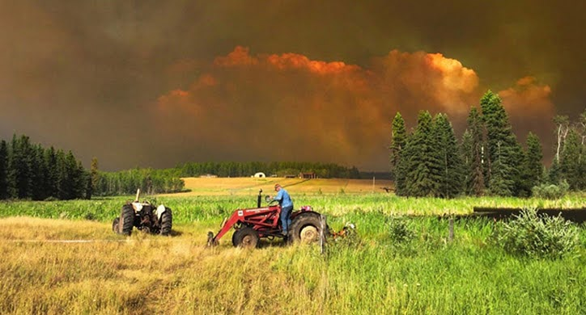
Agricultural land lost during the 2020 wildfire in California highlights the economic toll of wildfires.
Who is Affected?
Wildfires affect not just the immediate area but also entire regions, displacing people, destroying homes, and impacting mental health. Communities living near wildlands are particularly vulnerable. For firefighters and emergency responders, the physical and psychological toll is immense, often leading to exhaustion, burnout, and PTSD. Firefighters risk their lives daily to protect people and the environment, working under extreme conditions with limited resources. It's crucial to provide support for these heroes, both during and after their service.
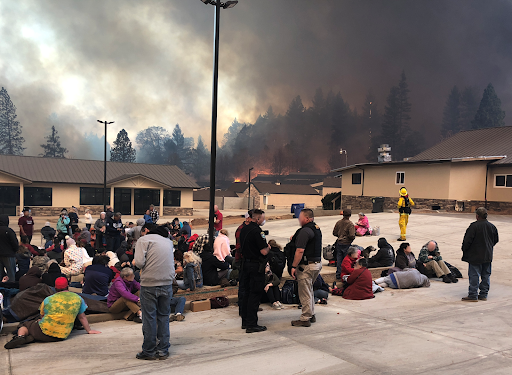
Civilians and first responders utilize a temporary refuge area established in a parking lot during a wildfire emergency.
Governments play a crucial role in managing the aftermath of a wildfire. They are responsible for making decisions related to evacuations, resource deployment, and providing public safety. Moreover, long-term recovery efforts can take years and require significant investments in rebuilding infrastructure. This project highlights the importance of interagency cooperation in managing these efforts efficiently.
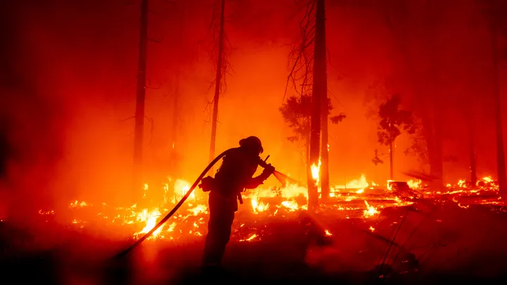
A firefighter battling the Creek Fire in the Cascadel Woods neighborhood of Madera County, California.
Wildfires also devastate ecosystems, displacing wildlife and reducing biodiversity. Studies from events such as the 2020 Australia bushfires, where nearly 3 billion animals were killed or displaced, show the far-reaching consequences for animal populations and ecosystems. Soil erosion, water runoff, and reduced air quality further compound these impacts, emphasizing the need for comprehensive ecosystem management strategies that consider both human and environmental factors.
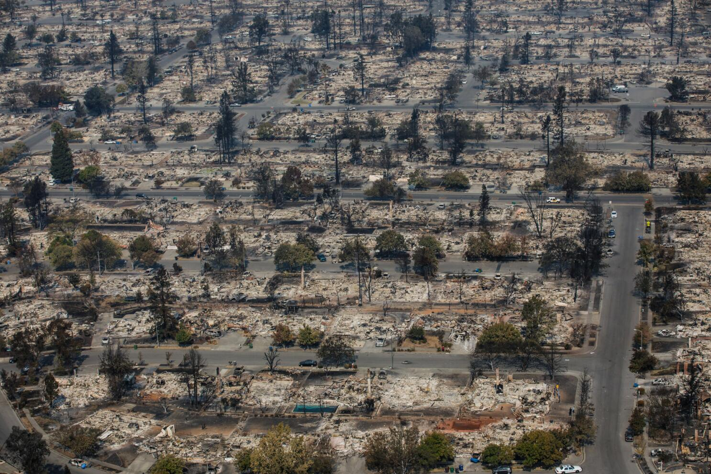
The Coffey Park subdivision in Santa Rosa, California, leveled by flames during the 2017 fire season.
Industries such as agriculture, tourism, and real estate are also significantly impacted by wildfires. Farmers face the loss of crops and livestock, leading to economic hardships, while tourism can suffer as natural attractions become damaged or inaccessible. Real estate markets may also decline, especially in areas at high risk for future fires. Understanding these interconnected impacts is key to developing effective risk management strategies.
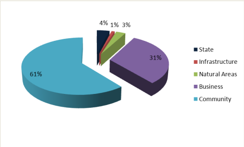
Economic impact breakdown from a San Diego County study showing the proportion of total impact borne by different societal segments.
What has been done so far, and what are the gaps?
While significant progress has been made in wildfire prediction, much work remains to address the growing threat. Satellite imagery, remote sensing, and machine learning algorithms are transforming the way wildfire data is collected and analyzed. However, there are gaps in integrating real-time data from multiple sources, and many existing models do not consider human factors, such as evacuation patterns. Furthermore, predicting fire behavior is still a challenging task due to the complexities of the environment and climate variability.
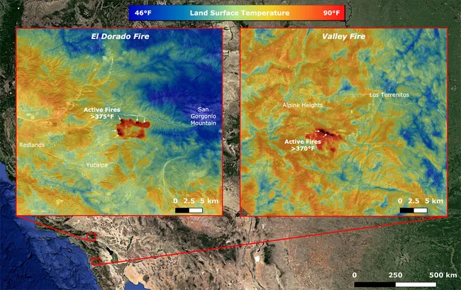
Nighttime view of two wildfires in Southern California, observed by NASA’s ECOSTRESS satellite, showing active fire areas and heatwave effects.
Data science and analytics play a crucial role in understanding wildfire behavior. By analyzing historical fire data, meteorological conditions, and real-time reports, we can improve fire prediction models and enhance risk management. Predictive modeling techniques such as clustering, classification, and machine learning have helped guide controlled burns and firebreak construction, reducing the risk of uncontrolled fires.
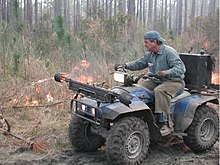
A controlled burn in a South Carolina forest using a custom-made driptorch mounted on an ATV to reduce wildfire risks.
However, many prediction models rely on historical data, which may not fully reflect the changing climate or land use. Machine learning offers promising solutions by processing vast amounts of real-time data and providing more accurate assessments of fire risks. By combining satellite data, environmental sensors, and social media reports, we can improve wildfire prediction and response efforts.
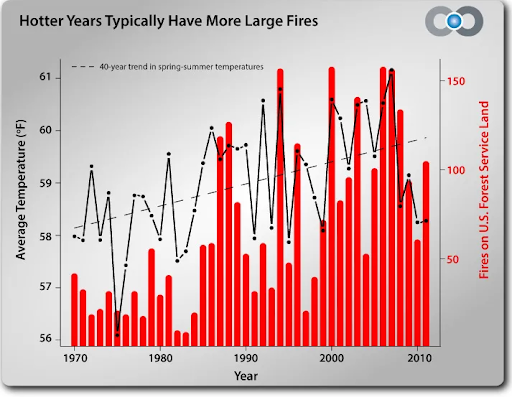
Average temperature across U.S. Forest Service lands over the past 40 years shows rising temperatures contributing to increased wildfire risks.
Ongoing research and collaboration are essential for developing better fire spread models, such as the U.S. Forest Service’s collaboration with Google Research to create real-time fire behavior models. The impact of climate change on wildfire dynamics means we need to continuously refine our strategies to build more resilient ecosystems and protect communities from future wildfire threats.
Research Questions
- How reliable are the satellite data used for wildfire predictions?
- What are the different instruments and satellites employed for wildfire imagery?
- What are the key hotspots for wildfires? Are they related to vegetation, volcanic activity, or other land sources?
- What patterns have emerged in wildfire frequency across the USA from 2000-2024?
- Have wildfire rates remained consistent year over year?
- Which state in the USA has experienced the most wildfires since 2000?
- What are the wildfire trends in the state with the most wildfires between 2000-2024?
- Is there a correlation between temperature patterns and wildfire frequency during peak months?
- Can we identify predictive factors for wildfire outbreaks in specific regions?
Data Collection
Data was collected from two APIs, NASA FIRMS API and Open-Meteo.
The Fire Information for Resource Management System (FIRMS) provides near real-time satellite data on active fires and thermal anomalies globally. Utilizing observations from NASA's MODIS and VIIRS instruments, FIRMS delivers data within hours of satellite overpasses, enabling timely monitoring of wildfire activity. This information is crucial for resource managers, researchers, and the public to assess fire locations, extents, and intensities. FIRMS offers various data formats, including CSV, KML, and shapefiles, and supports web services like WMS and WFS for seamless integration into mapping applications.
Open-Meteo is an open-source weather API that provides free access to weather forecasts and historical data without requiring an API key. It offers high-resolution forecasts, ranging from 1 to 11 kilometers, by partnering with national weather services. The API delivers current weather conditions, hourly forecasts for up to 48 hours, daily forecasts for up to 8 days, and historical weather data spanning over 80 years. Open-Meteo's user-friendly JSON API facilitates easy integration into applications, making it a valuable resource for developers and researchers seeking accurate and accessible weather information.
By leveraging these APIs, the project effectively combines real-time fire data with detailed weather information, enhancing the analysis and understanding of wildfire patterns and their environmental impacts.
Understanding Satellite Instruments: MODIS and VIIRS
MODIS: Launched in 1999, MODIS is a scanning radiometer that captures data in 36 spectral bands, ranging from visible to thermal infrared wavelengths. It offers global coverage with a spatial resolution of 250 to 1000 meters, depending on the spectral band. MODIS plays a vital role in monitoring land cover, sea surface temperatures, atmospheric properties, and more
VIIRS on Suomi NPP (SNPP): Launched in 2011, the Suomi National Polar-orbiting Partnership (SNPP) satellite carries the VIIRS instrument, which features 22 spectral bands spanning from 412 nm to 12 µm. It provides global coverage with a swath width of 3060 km and a spatial resolution of 375 to 750 meters, depending on the spectral band. VIIRS on SNPP continues the legacy of MODIS, offering enhanced capabilities for monitoring Earth's surface, atmosphere, and oceans
VIIRS on NOAA-21: Launched in November 2022, NOAA-21 is the latest addition to the Joint Polar Satellite System (JPSS) series. It carries an advanced VIIRS instrument with similar spectral bands and spatial resolutions as its predecessors. NOAA-21's VIIRS enhances the continuity and quality of environmental data records, supporting improved weather forecasting and climate monitoring
| Attribute | Description (Instrument MODIS) | Description (Instrument VIIRS) |
|---|---|---|
| Latitude | Center of 1 km fire pixel, but not necessarily the actual location of the fire as one or more fires can be detected within the 1 km pixel. | Center of nominal 375 m fire pixel. |
| Longitude | Center of 1 km fire pixel, but not necessarily the actual location of the fire as one or more fires can be detected within the 1 km pixel. | Center of nominal 375 m fire pixel. |
| Brightness | Channel 21/22 brightness temperature of the fire pixel measured in Kelvin. | VIIRS I-4 channel brightness temperature of the fire pixel measured in Kelvin. |
| Scan and Track | The algorithm produces 1 km fire pixels, but MODIS pixels get bigger toward the edge of scan. Scan and track reflect actual pixel size. | The algorithm produces approximately 375 m pixels at nadir. Scan and track reflect actual pixel size. |
| Acq_Date (Acquisition Date) | Date of MODIS acquisition. | Date of VIIRS acquisition. |
| Acq_Time (Acquisition Time) | Time of acquisition/overpass of the satellite (in UTC). | Time of acquisition/overpass of the satellite (in UTC). |
| Satellite | A = Aqua and T = Terra. N = Suomi National Polar-orbiting Partnership (Suomi NPP), N20 = NOAA-20 (designated JPSS-1 prior to launch), N21 = NOAA-21 (designated JPSS-2 prior to launch). | N = Suomi National Polar-orbiting Partnership (Suomi NPP), N20 = NOAA-20 (designated JPSS-1 prior to launch), N21 = NOAA-21 (designated JPSS-2 prior to launch). |
| Confidence (0 - 100%) | This value is based on a collection of intermediate algorithm quantities used in the detection process. Confidence estimates range between 0 and 100% and are assigned one of the three fire classes (low-confidence fire, nominal-confidence fire, or high-confidence fire). | This value is based on a collection of intermediate algorithm quantities used in the detection process. Low confidence daytime fire pixels are typically associated with areas of sun glint and lower relative temperature anomaly (<15K) in the mid-infrared channel I4. High confidence fire pixels are associated with saturated pixels. |
| Version | Version identifies the collection (e.g., MODIS Collection 6.1) and source of data processing (Ultra Real-Time (URT suffix), Real-Time (RT suffix), Near Real-Time (NRT suffix), or Standard Processing). Example: "6.1URT" - Collection 6.1 Ultra Real-Time processing. | Version identifies the collection (e.g., VIIRS Collection 1) and source of data processing. Example: "1.0NRT" - Collection 1 NRT processing, "1.0" - Collection 1 Standard processing. |
| Bright_T31 for MODIS / Bright_ti5 for VIIRS | Channel 31 brightness temperature of the fire pixel measured in Kelvin. | I-5 Channel brightness temperature of the fire pixel measured in Kelvin. |
| FRP (Fire Radiative Power in megawatts) | Depicts the pixel-integrated fire radiative power in MW (megawatts). | FRP depicts the pixel-integrated fire radiative power in MW (megawatts). The VIIRS 375 m fire detection algorithm was customized to optimize its response over small fires while balancing false alarms. |
| DayNight (Day or Night) | D = Daytime fire, N = Nighttime fire. | D = Daytime fire, N = Nighttime fire. |
| Type (Inferred hot spot type) | 0 = presumed vegetation fire, 1 = active volcano, 2 = other static land source, 3 = offshore. | 0 = presumed vegetation fire, 1 = active volcano, 2 = other static land source, 3 = offshore. |
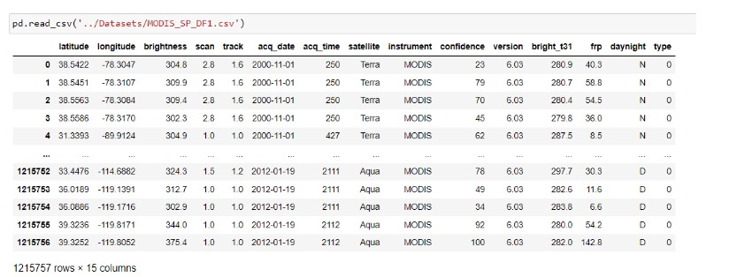
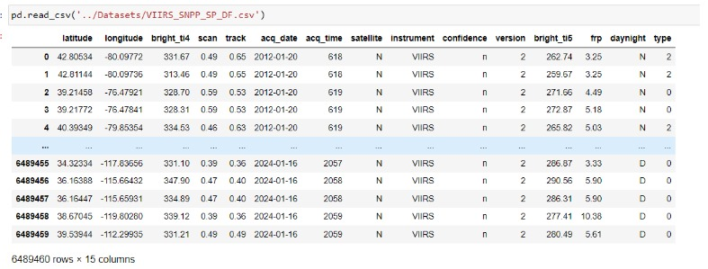
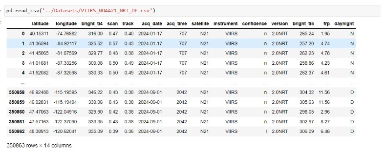
The above screenshots show the raw data collected from multiple satellites, including MODIS and VIIRS.
All the data from the satellites were merged
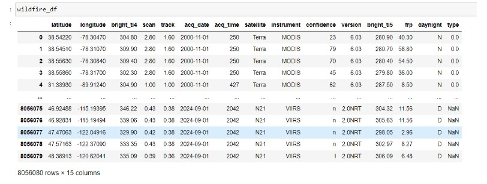
The merged wildfire raw dataset consists of all wildfires that occurred in the USA from 2000-2024.
The column ’confidence’ has mixed data types. The confidence levels are low(l), nominal(n), and high(h). Only about 15% of the data within the confidence attribute is numeric, so we binned the values into different ranges. Instances with confidence = l were dropped from the training set, as they were likely misclassified due to sun glare or cloud reflection. Daytime fire pixels with low confidence are linked to sun glint and lower relative temperature anomalies (<15K) in mid-infrared channel I4. Nominal confidence pixels are those without sun glint and with a temperature anomaly of >15K in day or nighttime data. Fire pixels with high confidence are associated with day or nighttime saturation

Histogram showing the distribution of confidence levels of satellite wildfire detection.

Histogram showing the distribution of wildfires based on time of the day
The column ‘type’ has some NA’s - Most of the values within the column are 0. So imputation here is done using Mode.
Geospatial Analysis
The following carousel of density plots depicts the wildfire distribution from 2000 to 2024 at 5 year intervals in the United States.
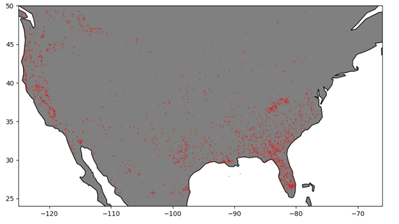
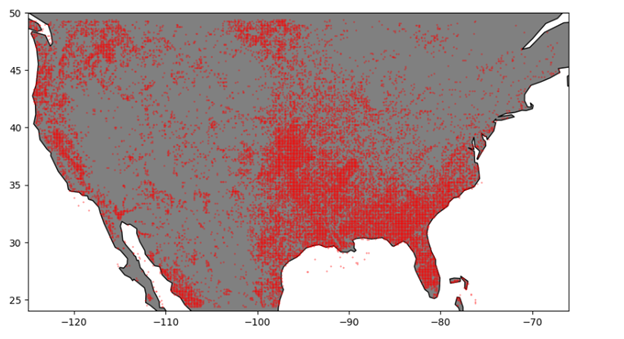
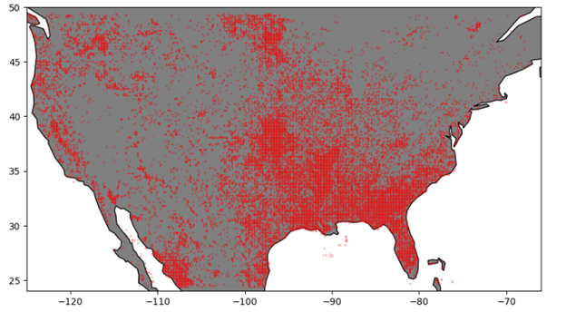
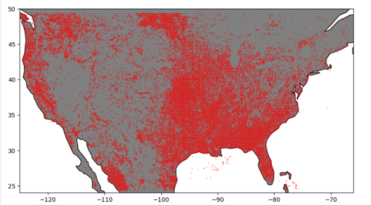
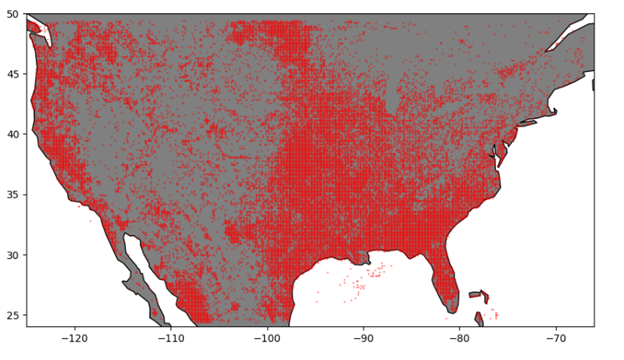
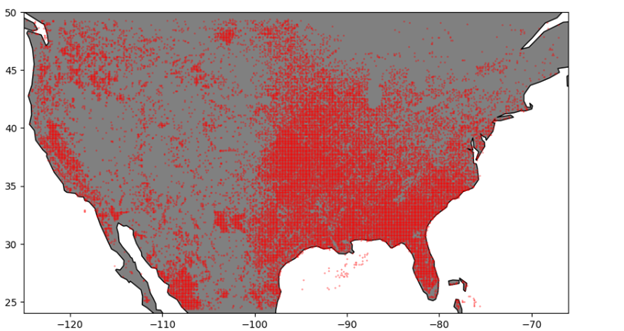

The above temporal plot implies that more than 75% of all occurrences of wildfires in the United States since 2000 have happened after 2013!

The above histogram shows the wildfire count of the United States from 2000 to present

Density Plot of wildfires in California in the year 2024, with a high concentration in Southern California
California encountered the most wildfires and accounts for almost one-eigth of the total wildfires of the United States

Frequency Plot of wildfires in California.
Frequency Plot to identify what time of the year contributes to the most wildfires in California. It turns out that July to September has the most number of wildfires. These also happen to be the hottest months of the year in California
Weather Data Collection
Open-Meteo weather API was used to gather weather data. It is an open-source weather API which provides hourly weather data. Since the API has a daily limit of 10000 calls, the analysis was restricted to only Southern California from 2020 and the weather data was fetched for respective latitude and longitudes.
The weather dataset contains the following attributes:

Below is the raw weather data

Weather Data EDA
Snow Depth
Snow depth is the only Column with null values. 99% of all snow_depth occurrences are 0 indicating that snow does not happen when there is wildfire. Therefore all the nulls will be replaced by the Mode=0.


Temperature

Months 6-9 (June to September) have a higher average temperature compared to the rest of the year which is very similar to the wildfire-month trend seen earlier above. Temperature is therefore a critical variable when it comes to wildfires.

Correlation heatmap of weather and fire variables.

There is an apparent negative correlation between temperature and humidity, but the other features like wind speed and precipitation do not have a lot of correlation between them.

There is a very marginal difference in relative humidity in the presence or absence of a wildfire.
Training Dataset
The training dataset for our wildfire prediction model combines weather data from a weather API and satellite data from NASA's API. The dataset has features such as temperature, humidity, wind speed, and cloud cover. The target variable is "fire", where a value of 1 indicates the occurrence of a wildfire, and 0 indicates no wildfire.
Below is the final dataset after merging satellite and weather data
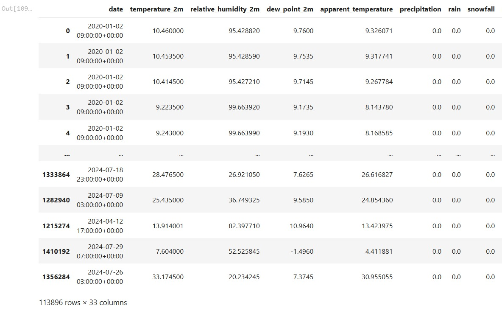
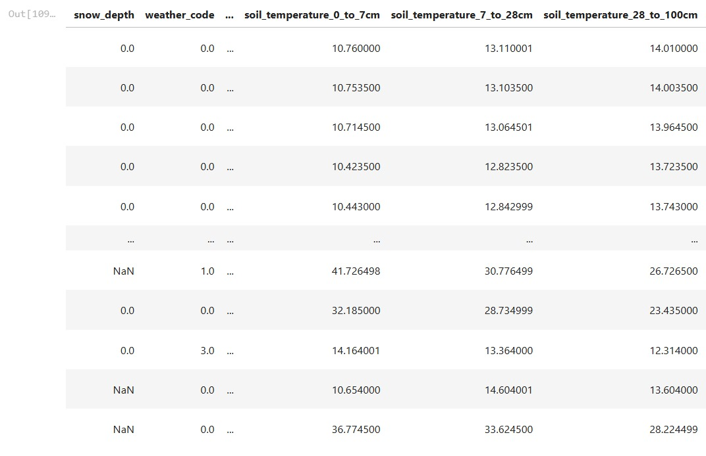
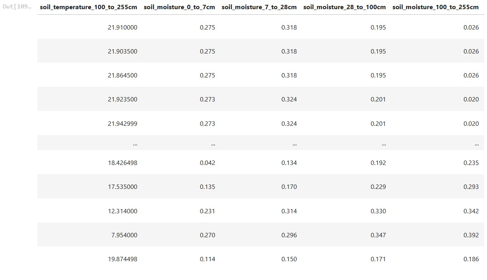
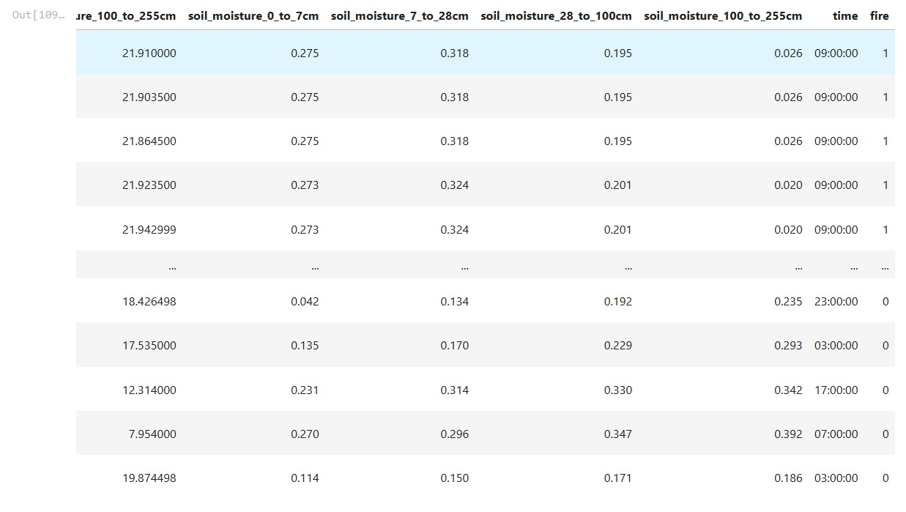
The dataset will be normalized for the training process using techniques like standardScaler
Code
Full code to Data Prep/EDA on GitHub: View Code
Principal Component Analysis (PCA)
Principal Component Analysis (PCA) is a powerful statistical technique used for dimensionality reduction while preserving the most significant variance in a dataset. It transforms high-dimensional data into a smaller set of principal components—orthogonal directions capturing the highest variance. PCA enhances data visualization, reduces complexity, and improves computational efficiency by leveraging eigenvalue decomposition of the covariance matrix or Singular Value Decomposition (SVD).
PCA in This Project
PCA was applied to a wildfire dataset to analyze high-dimensional features and reduce complexity while retaining critical variance. The goal was to visualize patterns and determine how many dimensions are necessary to capture meaningful information. The dataset contains multiple features related to environmental and fire risk factors.
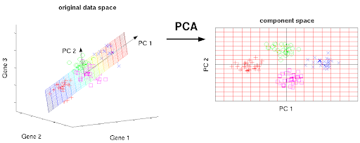
PCA Process
Step by step process of PCA
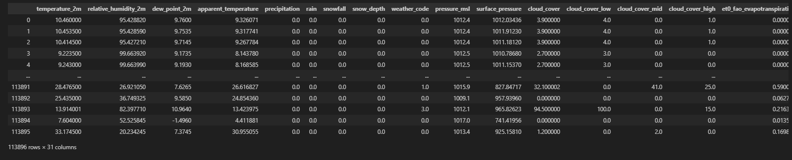
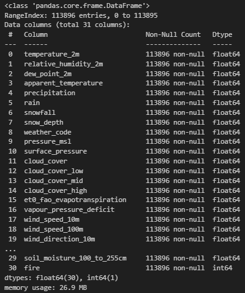
Dataset used for PCA analysis.
Access the dataset here: Data.
Data Preprocessing
The target variable "fire" was removed before applying PCA to ensure only quantitative data was considered. The dataset was then normalized using Sklearn’s StandardScaler, which is necessary because PCA is sensitive to scale—features with larger numerical ranges could dominate smaller ones.
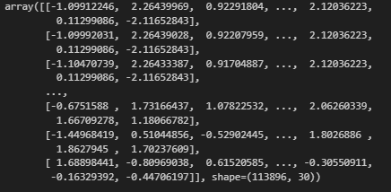
Standardized data after normalization.
PCA Implementation
PCA was conducted with n_components=2 and n_components=3 to visualize data in two and three dimensions, respectively.
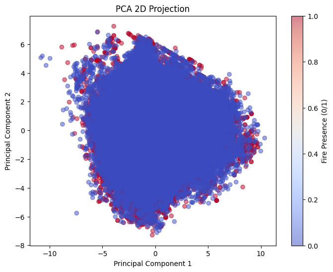
2D projection of the dataset using PCA.
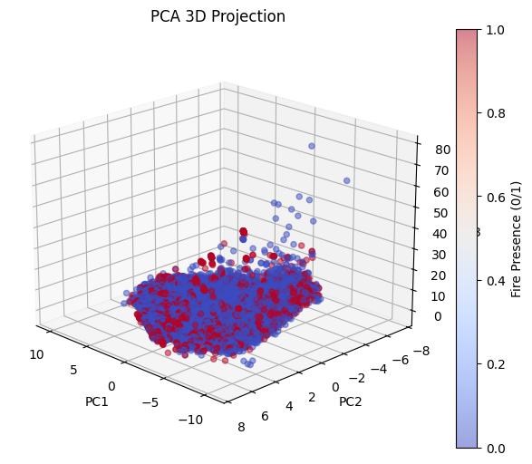
3D projection of the dataset using PCA.
Variance Retention
The percentage of variance retained by different principal components:
- 2D PCA: 37.07% of total variance.
- 3D PCA: 47.44% of total variance.
Reducing the dataset to two principal components retains 37.07% of its variance, meaning 62.93% of the original variability is lost.
Using three principal components captures 47.44% of the total variance, reducing information loss compared to the 2D version.
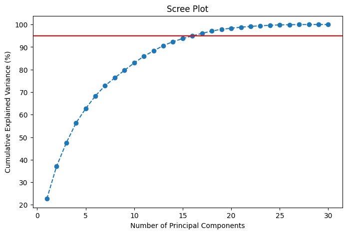
Cumulative variance retained for increasing principal components.
Optimal Dimensionality
To retain at least 95% variance, a minimum of 17 dimensions is required. The cumulative variance plot below shows how variance increases with the number of components.
Eigenvalues and Principal Components
The eigenvalues represent the amount of variance each principal component captures. The top three eigenvalues are:
- Eigenvalue 1: 6.805
- Eigenvalue 2: 4.316
- Eigenvalue 3: 3.110
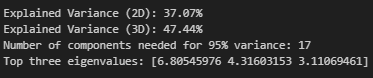
Top three eigenvalues from PCA analysis.
Conclusion
PCA effectively reduced dimensionality while preserving essential variance. The first few principal components encapsulate most of the dataset’s information, showcasing PCA’s utility in feature extraction and data compression. Key insights include:
- Reducing the dataset to 2D retains 37.07% variance, but loses a significant amount of information.
- Using 3D increases the retained variance to 47.44%, but higher dimensions may still be required.
- To retain at least 95% of the variance, 17 principal components are needed.
By optimizing the number of dimensions, PCA ensures computational efficiency while preserving meaningful patterns, making it a valuable tool for dimensionality reduction in machine learning and data analysis.
Code
Full code to PCA on GitHub: View Code
Clustering is an unsupervised learning technique used to group similar data points together. This section compares three popular clustering algorithms: K-Means, Hierarchical Clustering, and DBSCAN.
Understanding Distance Metrics
Distance metrics play a crucial role in clustering by determining the similarity between data points. The choice of metric significantly impacts the clustering results:
- Euclidean Distance: The most common metric, used in K-Means, measuring straight-line distance between two points.
- Manhattan Distance: Measures distance along axes at right angles, useful for high-dimensional spaces.
- Cosine Similarity: Used in Hierarchical clustering, evaluates the angle between vectors rather than distance.
- Density-Based Distance: Applied in DBSCAN, where clusters are identified based on density variations.
Comparison of Clustering Algorithms
| Clustering Type | Description | Strengths | Weaknesses |
|---|---|---|---|
| K-Means | Partitions data into k clusters by minimizing intra-cluster variance. | Works well for spherical clusters, fast, scalable. | Needs predefined k, sensitive to outliers, struggles with non-spherical clusters. |
| Hierarchical | Creates a tree of clusters using agglomerative or divisive methods. | No need to predefine k, produces dendrograms for visual analysis. | Computationally expensive for large datasets, best for smaller datasets. |
| DBSCAN | Groups points based on density and identifies outliers as noise. | Finds arbitrarily shaped clusters, robust to noise and outliers. | Struggles with varying densities, sensitive to eps and min_samples selection. |
Dataset Preparation
The dataset used for clustering consists of 113,896 rows × 31 columns. The preprocessing steps included:
- Removing non-numeric columns (e.g., date, time).
- Separating labels from features.
- Normalizing using
StandardScaler(mean = 0, stddev = 1).
Raw dataset before preprocessing.
Normalized dataset after preprocessing.
PCA Dimensionality Reduction
To improve clustering visualization, PCA was applied to reduce data to 3 dimensions.
Variance retained after PCA: 47.44%
Cumulative variance retained after PCA.
K-Means Clustering
Silhouette scores were used to determine optimal k values.
Selected K values:
- k = 4
- k = 5
- k = 6
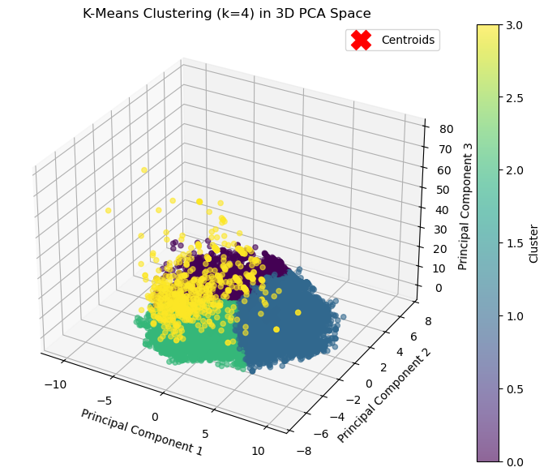
K-Means clustering result for k=4. Silhouette Score = 0.3207
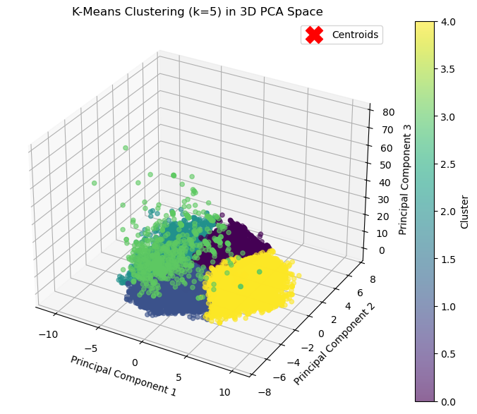
K-Means clustering result for k=5. Silhouette Score = 0.3153
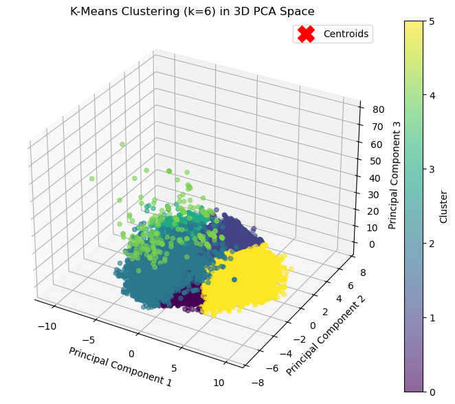
K-Means clustering result for k=6. Silhouette Score = 0.3328
Hierarchical Clustering
A dendrogram was generated using Ward’s method to determine the optimal number of clusters.
Choosing n_clusters from the Dendrogram:
- The longest vertical lines in the dendrogram represent major cluster separations.
- A horizontal cut was made at approximately distance 250-300 before the largest merges.
- The cut intersected three major vertical branches, leading to n_clusters = 3.
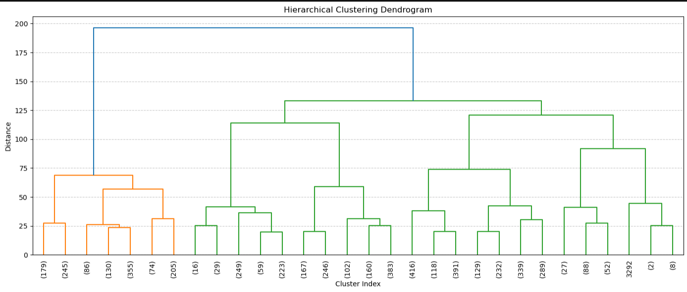
Hierarchical clustering dendrogram with the chosen cut-off.
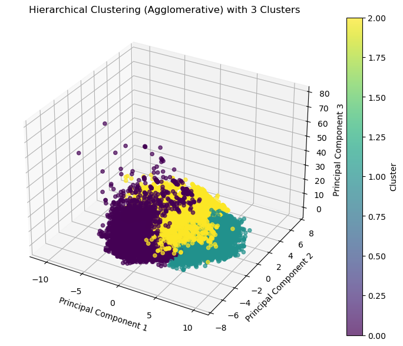
Hierarchical clustering results for n_clusters = 3.
DBSCAN Clustering
DBSCAN was applied to detect clusters and outliers.
Choosing eps using K-Distance Plot:
- The k-distance plot was generated using
min_samples = 15(as dataset size > 100,000). - The "elbow point" in the graph represents the distance where the clustering structure changes significantly.
- The elbow point was found at eps ≈ 0.319.
- To allow stable clustering, eps was increased by 10% to 0.351.
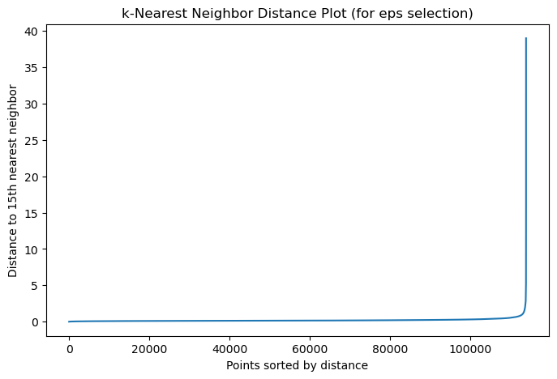
k-Distance plot used to determine the best eps for DBSCAN.
DBSCAN clustering result with estimated eps = 0.753.
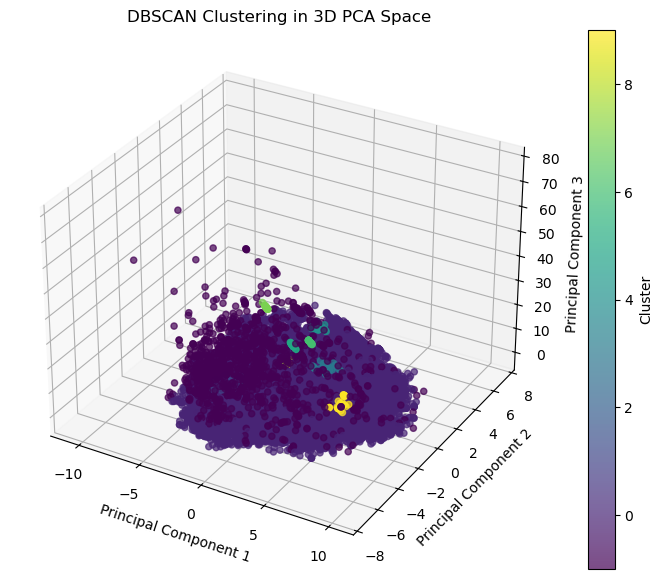
DBSCAN clustering plot
Comparison of Clustering Methods
| Method | Number of Clusters | Handles Outliers? | Best for Large Data? |
|---|---|---|---|
| K-Means | 6 | No | Yes |
| Hierarchical | 3 | No | No |
| DBSCAN | 10 | Yes | No |
How Clustering is Used in This Project
Clustering was applied to segment weather and environmental data for wildfire prediction. The clustering methods allowed for identifying:
- Distinct weather patterns that correlate with fire occurrences.
- Outlier regions that exhibit extreme conditions conducive to wildfires.
- Similar environmental conditions that may help in future predictive modeling.
Conclusion
Clustering helped uncover meaningful patterns in environmental and weather data that could be linked to wildfire activity. Each method offers a different view through which we can explore the data. K-Means was useful for finding general groupings, Hierarchical Clustering helped visualize relationships, and DBSCAN highlighted unusual or extreme conditions. These insights are valuable for understanding the diverse conditions that may contribute to wildfires and can guide more informed decision-making in environmental monitoring and disaster preparedness.
Code
Full code to Clustering on GitHub: View Code
Association Rule Mining (ARM)
Association Rule Mining (ARM) is a data mining method used to uncover relationships or patterns among variables in large datasets. It is commonly applied in market basket analysis, recommender systems, and environmental monitoring.
What is ARM and How Does It Work?
ARM finds frequent patterns in transactional data and generates rules in the form of {antecedent} → {consequent}. Each rule is evaluated based on support, confidence, and lift, which measure frequency and strength of association.
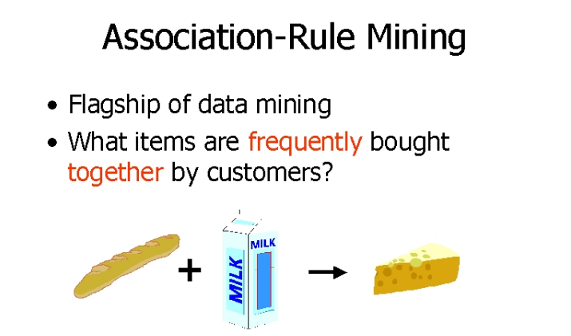
ARM Workflow: frequent itemsets → rules using Support, Confidence, and Lift
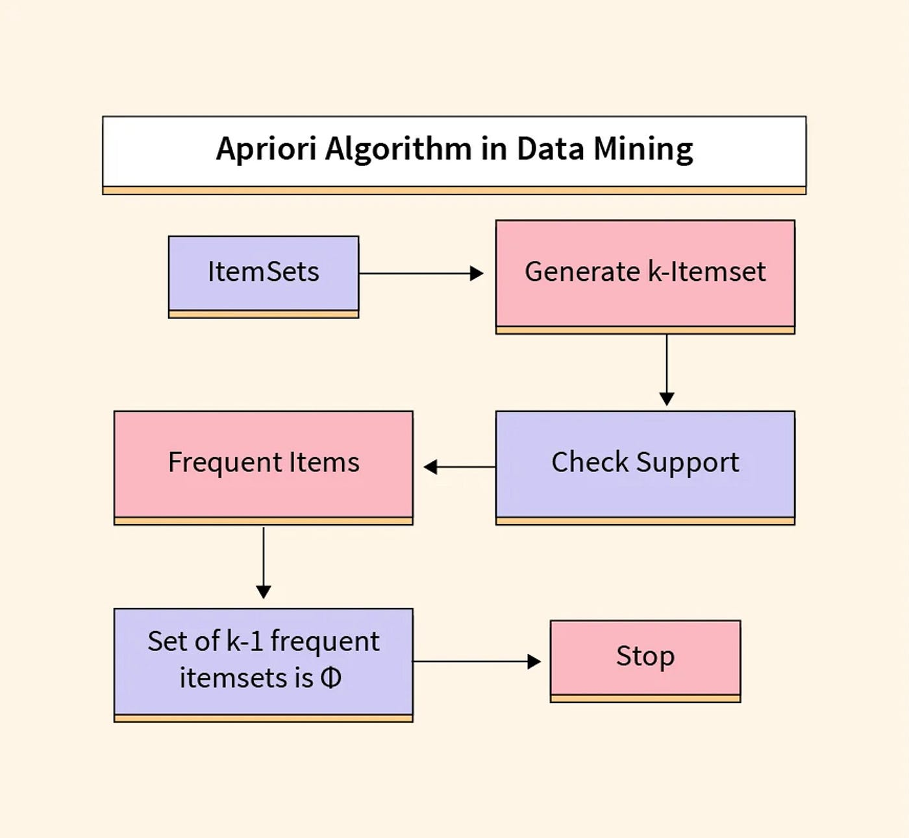
Working of Apriori Algorithm
Key Metrics in ARM
- Support: The proportion of transactions that contain an itemset.
- Confidence: The probability that the consequent is found given the antecedent.
- Lift: The ratio of observed confidence to expected confidence. Lift > 1 indicates a positive association.
Apriori vs FP-Growth
While Apriori systematically explores all item combinations, it can be slow for large datasets. FP-Growth is more efficient and uses a compressed FP-tree structure to mine frequent itemsets without candidate generation.
How ARM Was Used in This Project
In this wildfire prediction project, ARM was used to discover recurring weather and environmental conditions that frequently co-occur before fires. For example, rules such as {"low humidity", "high wind"} → {"fire"} help us pinpoint high-risk patterns that are not immediately visible using supervised learning methods.
Raw environmental data before transformation
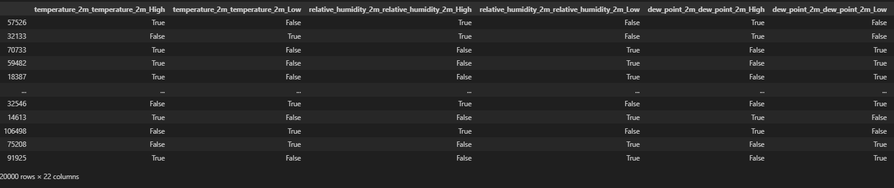
Binary transaction format used for ARM
📁 Dataset: transaction_data.csv
ARM Implementation
mlxtend's implementation of FP-Growth was used to generate frequent itemsets and extract association rules with thresholds: support ≥ 0.005, confidence ≥ 0.2, lift ≥ 1.5.
💻 Code: ARM.ipynb on GitHub
Results
We extracted and visualized the top 15 association rules based on each metric:
Top Rules by Support
Support helps identify the most common patterns in the dataset. These rules reflect frequently co-occurring conditions.
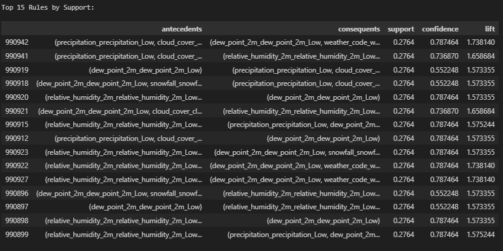
Top 15 rules sorted by support
Top Rules by Confidence
Confidence shows how often the rule is correct when the antecedent is present. High-confidence rules are more reliable.
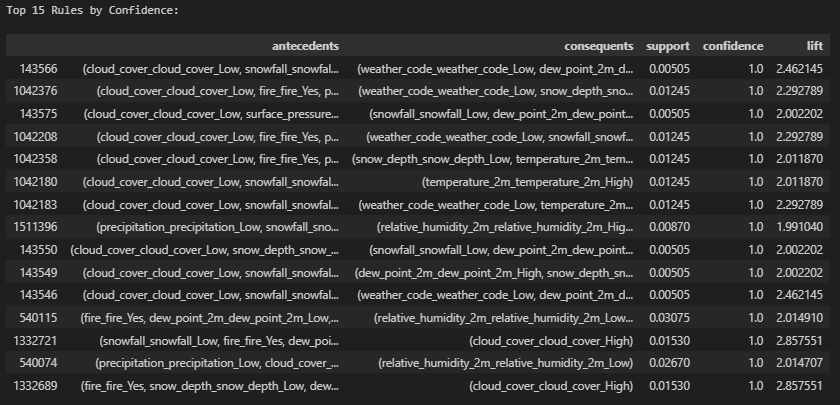
Top 15 rules sorted by confidence
Top Rules by Lift
Lift indicates how much more likely the consequent is, compared to random chance. Rules with Lift > 1.5 are strong associations.
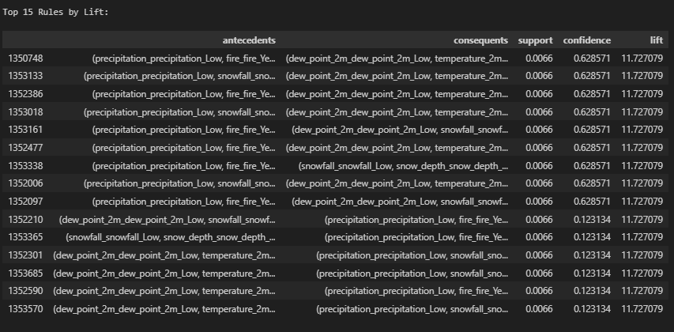
Top 15 rules sorted by lift
Network Visualization
A network graph was used to visualize how items are connected through rules. This helped highlight critical variables like wind speed, soil moisture, and pressure that cluster with fire occurrence.
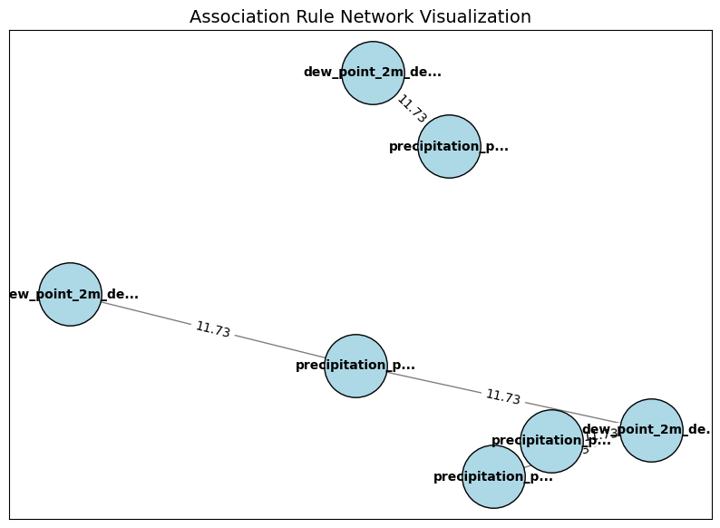
Network of strong association rules with fire-relevant features
Conclusion
ARM revealed frequent environmental patterns that correlate with wildfire risk. Key insights:
- High support: rules helped identify frequent weather combinations
- High confidence: rules showed strong reliability, e.g., high temperature and low humidity often led to fire
- High lift: rules emphasized non-random, meaningful associations
Takeaway: ARM added a new, interpretable layer to our wildfire prediction strategy by exposing unsupervised relationships between environmental variables. These insights can support early warning systems and resource allocation.
Overview
Naïve Bayes (NB) is a family of probabilistic classifiers based on Bayes’ Theorem. It works on the assumption that features are conditionally independent given the class. Despite this simplification, Naïve Bayes models perform well in many real-world applications, particularly when working with high-dimensional data.
Naïve Bayes is commonly used for:
- Text classification (spam detection, sentiment analysis)
- Medical diagnosis
- Document categorization
- Recommender systems
Advantages: Fast to train, simple to implement, works well on small datasets, and scalable to large feature spaces.
Types of Naïve Bayes Classifiers in Scikit-learn
Scikit-learn provides multiple Naïve Bayes variants and each of them require different types of data:
- Multinomial Naïve Bayes (MNB): Designed for count data such as word frequencies in text documents. Suitable for NLP tasks like spam detection or topic classification.
- Gaussian Naïve Bayes (GNB): Assumes features are normally distributed and works the best with continuous features like temperature or sensor readings.
- Bernoulli Naïve Bayes: Best for binary/boolean features. Used in binary text data and sentiment analysis with binary indicators.
- Categorical Naïve Bayes (CNB): Works with discrete categorical features like red and blue. Works will with ordinal data.
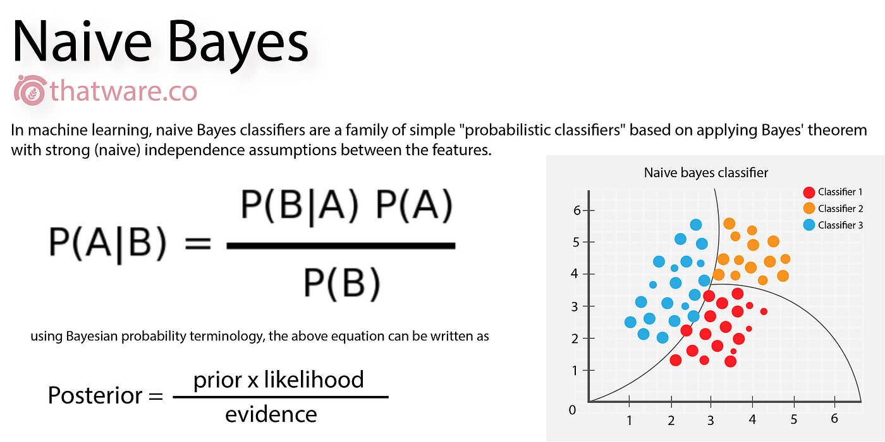
Visual representation of Naïve Bayes structure and classification flow
Comparison Summary
| Variant | Best for | Feature Type | Example Use Case |
|---|---|---|---|
| Gaussian NB | Continuous data | Normally distributed features | Medical diagnosis, sensor data |
| Multinomial NB | Text classification | Count-based discrete features | Email spam detection |
| Bernoulli NB | Binary data | Boolean features | Sentiment classification (yes/no features) |
| Categorical NB | Categorical variables | Labeled categories | Demographic-based classification |
Smoothing in Naïve Bayes
Why smoothing? Smoothing addresses the problem of zero probability. If a feature value is not seen in the training data for a given class, the model assigns a zero probability to it — making the entire product of probabilities zero and the classification fail.
Laplace Smoothing (additive smoothing) adds a small constant (usually 1) to all counts to ensure no probability is exactly zero. This improves generalization and model robustness on unseen data.
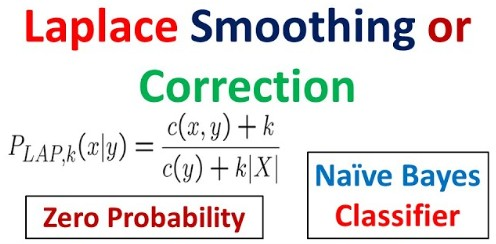
Laplace Smoothing for Naive Bayes Classifier
Data Preparation
I implemented and evaluated three types of Naïve Bayes classifiers on a wildfire dataset with binary labels (fire = 0 or 1): MultinomialNB, GaussianNB, and CategoricalNB. Since each model requires specific data formats, I applied different preprocessing techniques to ensure compatibility:
- MultinomialNB: Required non-negative input, so I used
MinMaxScalerto scale all features between 0 and 1. - GaussianNB: Requires normally distributed continuous data, so I applied
StandardScaler. - CategoricalNB: Required discrete inputs, so I used
KBinsDiscretizerwithn_bins=10to convert numerical features into categorical bins.
The dataset was split into training and testing sets using an 80:20 ratio via train_test_split with a fixed random_state for reproducibility. Ensuring that the training and testing data are disjoint is essential to avoid data leakage and to get an honest estimate of model performance on unseen data.
Sample datasets and the full source code are linked below:
Cleaned dataset before preprocessing (used across all NB models)
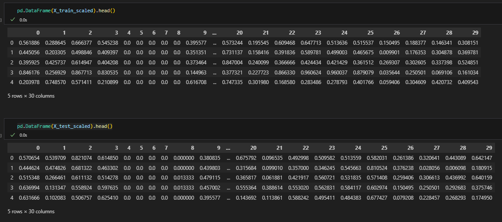
MinMax-scaled training and testing data for MultinomialNB
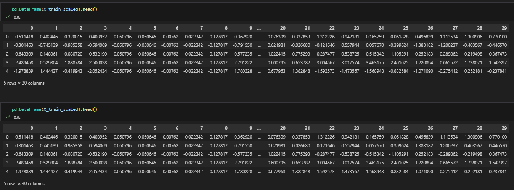
Standard-scaled training and testing data for GaussianNB
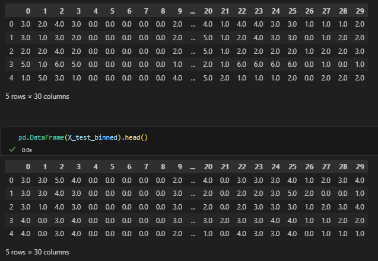
KBins-discretized training and testing data for CategoricalNB
Results and Conclusions
Three Naïve Bayes models were tested to predict wildfire occurrence using weather and soil features. Each model had different assumptions and required specific data preparation strategies. Performance was evaluated using accuracy, confusion matrices, and AUC scores.
- Multinomial Naïve Bayes (MNB): Accuracy: 55.5%, AUC: 0.5812. Although scaled using MinMaxScaler, it struggled with continuous features not suited for count-based modeling. Recall was skewed, especially underperforming on class 0.
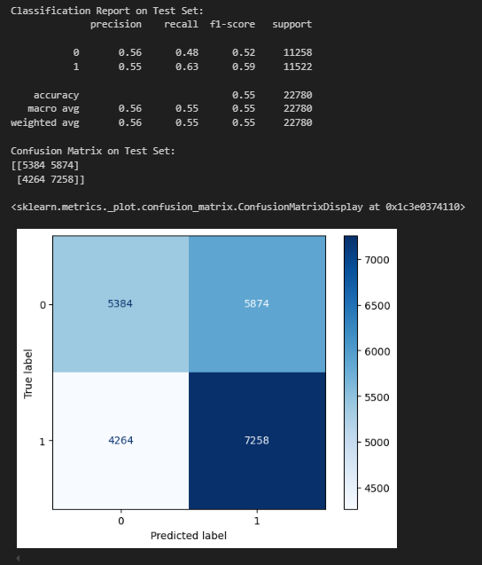
MultinomialNB confusion matrix and classification report
ROC Curve for MultinomialNB (AUC: 0.5812)
- Gaussian Naïve Bayes (GNB): Accuracy: 53.4%, AUC: 0.5832. While designed for continuous data, it showed highly imbalanced recall—very poor for class 0 (17%) and overly confident on class 1 (89%). This suggests the features were not normally distributed as required by GNB.
GaussianNB confusion matrix and classification report
ROC Curve for GaussianNB (AUC: 0.5832)
- Categorical Naïve Bayes (CNB): Accuracy: 58.4%, AUC: 0.6250. After binning continuous features using KBinsDiscretizer, CNB provided the most balanced and accurate predictions. Precision, recall, and F1-score were comparable across both classes, making it the best-performing NB model for this dataset.
CategoricalNB confusion matrix and classification report
ROC Curve for CategoricalNB (AUC: 0.6250)
Conclusion:Categorical Naïve Bayes performed better than the the other two models. This shows that selecting the correct Naïve Bayes variant and data preprocessing is crucial. All the three models are fast and easily interpretable and their performance depends heavily on how well the input features match their theoretical assumptions.
Decision Tree Overview
Decision Trees (DTs) are supervised machine learning models that split data into smaller and smaller groups based on feature values, like asking a series of yes/no questions. Each split aims to group similar outcomes together, forming a tree-like structure of decisions.
They are popular because they are intuitive and easy to visualize. You can follow the path from root to leaf to understand how a prediction is made. They are used in many fields, including:
- Medical diagnosis
- Fraud detection
- Customer segmentation
- Credit scoring

Sample decision tree showing how questions split the data

Actual output from a trained decision tree classifier on wildfire data
Splitting Criteria
Decision Trees decide where to split using metrics like:
- Gini Impurity: How often a randomly chosen item would be incorrectly classified.
- Entropy: Measures randomness or disorder in the data.
- Information Gain: How much impurity is reduced after a split.
Example Calculation:
Entropy = - (8/12)*log2(8/12) - (4/12)*log2(4/12) ≈ 0.918
If a split creates two parts with lower entropy, the Information Gain tells us how useful the split is:
IG = 0.918 - (9/12)*0.811 - (3/12)*0.0 = 0.309
Data Preparation
Since Decision Trees don’t require scaled features, the cleaned wildfire dataset was reused as-is. It contains weather and soil-based predictors with fire occurrence (0 or 1) as the target. The data was split 80:20 into training and testing sets with no overlap.
Original cleaned wildfire dataset used in Decision Tree modeling


Training and testing split created with train_test_split
Model Experiments and Results
The default Decision Tree model severely overfit with 99.8% training accuracy. To fix this, I trained three different trees with tuned hyperparameters:
- Tree 1: Gini criterion, limited depth
- Tree 2: Entropy criterion, different feature subset
- Tree 3: Correlated features removed, best generalization
Decision Tree 1 (Gini, Depth-Limited)
- Training Accuracy: 69.4%
- Testing Accuracy: 66.87%
- AUC Score: 0.73
- Observation: Balanced generalization, outperformed Naïve Bayes


Visualization of Decision Tree 1
Decision Tree 1
Decision Tree 2 (Entropy, Feature Subset)
- Training Accuracy: 67.7%
- Testing Accuracy: 64.2%
- AUC Score: 0.69
- Observation: Diverse split, decent balance of precision/recall


Visualization of Decision Tree 2
Decision Tree 2
Decision Tree 3 (Decorrelated Features)
- Training Accuracy: 73.8%
- Testing Accuracy: 71.02%
- AUC Score: 0.77
- Observation: Best performance, reduced overfitting via feature decorrelation


Visualization of Decision Tree 3
Decision Tree 3
Non-Technical Conclusion
To predict wildfire risk, I explored decision trees models that ask a series of yes/no questions based on the weather and soil data. They are like flowcharts that narrow down conditions to make a decision.
I trained three different decision trees by slightly changing how the splits were made. Each one learned patterns like "dry soil and high wind → higher fire risk." One of these trees (Tree 3) did very well and correctly predicting fires in over 71% of test cases.
Each version of the tree gave us new insights into the data. Some trees focused on moisture, others on wind speed or temperature. Even though their shapes differed, they all highlighted conditions known to increase wildfire risk.
Compared to simpler models like Naïve Bayes, decision trees made more accurate and realistic predictions while also providing a visual explanation for those decisions.
Decision trees proved to be an effective and understandable tool for wildfire classification. Its solid performance and insights that can help in real-world fire monitoring systems.
Regression Overview
What is Linear Regression?
Linear Regression is a supervised learning algorithm used to predict a continuous output variable based on one or more input features. It assumes a linear relationship between the independent variables (features) and the dependent variable (target). The model fits a straight line by minimizing the sum of squared differences between actual and predicted values. This is known as the least squares method.
What is Logistic Regression?
Logistic Regression is a classification algorithm used to predict binary outcomes (e.g., 0 or 1, true or false). It computes a linear combination of input features and applies the sigmoid function to produce probabilities between 0 and 1. Based on a defined threshold (commonly 0.5), it classifies inputs into one of the two categories. Logistic regression is widely used in medical diagnoses, risk prediction, and binary classification tasks.
Similarities and Differences
Both Linear and Logistic Regression use a linear combination of input features and are trained using labeled data. The key difference is that Linear Regression predicts continuous numerical values, while Logistic Regression predicts probabilities for classification. Linear Regression uses least squares for optimization, while Logistic Regression uses Maximum Likelihood Estimation. Additionally, Logistic Regression includes a non-linear transformation (sigmoid) to map values between 0 and 1.
Sigmoid Function in Logistic Regression
Yes, Logistic Regression uses the sigmoid function to map the raw output of the linear model into a probability between 0 and 1. This is essential for classification because it interprets the output as the probability of belonging to the positive class. The sigmoid function is defined as 1 / (1 + e^-z), where z is the linear combination of inputs.
Maximum Likelihood in Logistic Regression
Logistic Regression uses Maximum Likelihood Estimation (MLE) to estimate model parameters. MLE finds the set of weights that maximize the likelihood of observing the actual labels in the training data. Instead of minimizing error, this approach focuses on making the predicted probabilities closely match the true class labels. It is optimized using gradient descent or related techniques.
Data Preparation
We used the same cleaned and labeled dataset from the Naïve Bayes analysis. It contains only two output categories (fire = 0 or 1), making it ideal for binary classification. The dataset was split using an 80:20 ratio into training and testing sets with random_state=42 to ensure reproducibility. The split is disjoint to prevent data leakage and ensure honest performance evaluation.
Cleaned Dataset before scaling
Before modeling with Logistic Regression, we standardized all feature values using StandardScaler. This step was crucial for Logistic Regression to ensure that all features contribute proportionally. The same scaling was used for Gaussian Naïve Bayes as well. You can preview the data and transformation below.
Standard-scaled training and testing dataset used for logistic regression
🔗 Data and Code:
Model Results
Logistic Regression
- Accuracy: 65.45%
- AUC Score: 0.70
Training vs. Testing Accuracy for Logistic Regression
Confusion Matrix and Classification Report for Logistic Regression
ROC Curve showing AUC = 0.70 for Logistic Regression
Model Comparison: Logistic Regression vs MultinomialNB vs Decision Tree
Multinomial Naïve Bayes
- Accuracy: 55.5%
- AUC Score: 0.5812
- Observation: Performed poorly on continuous features, even after MinMax scaling. Lower recall and F1-scores indicate poor generalization.
Training vs. Testing Accuracy for MultinomialNB
Confusion Matrix and Classification Report for MultinomialNB
ROC Curve showing AUC = 0.5812 for MultinomialNB
Decision Tree
- Accuracy: 71.02%
- AUC Score: 0.77
- Observation: Stronger performance than NB and Logistic Regression. More flexible and interpretable, though sensitive to hyperparameters.
Training vs. Testing Accuracy for Decision Tree
Confusion Matrix and Classification Report for Decision Tree
ROC Curve showing AUC = 0.77 for Decision Tree
Conclusions
Which model worked best? Among the three, the Decision Tree delivered the highest AUC and a strong balance of accuracy and recall. Logistic Regression also performed well, particularly due to standardized feature inputs, but slightly underperformed compared to the tree. Multinomial Naïve Bayes struggled because its assumptions did not align with the dataset's continuous features, even after scaling.
- Decision Trees were most effective due to their flexibility and non-linear splits.
- Logistic Regression was a good baseline model, especially after feature scaling.
- MultinomialNB is better suited for count-based or categorical data, not continuous environmental features.
Overall Insight: For wildfire classification based on weather and soil conditions, Decision Trees provided the best trade-off between interpretability and predictive performance.
Support Vector Machines (SVM) Overview
What is SVM?
Support Vector Machines (SVMs) are supervised learning models used for classification tasks. They work by finding the optimal hyperplane that maximizes the margin between two classes in the feature space. This margin is defined by the closest points from each class and are called support vectors.
Why SVMs are Linear Separators?
An SVM tries to draw a straight line (or hyperplane in higher dimensions) that best separates the data points of two classes. This is known as a linear separator because the decision boundary is a straight line or plane. The optimal linear separator is the one that leaves the maximum margin between the two classes.
Dot Product in Kernel Trick
When data is not linearly separable in the original space, SVMs use a technique called the kernel trick to map data into a higher-dimensional space where a linear separator might exist. This transformation is done using a kernel function, which calculates the dot product of the data in that higher-dimensional space. It does not explicitly compute the transformation.
Common kernels include:
- Linear kernel: K(x, x′) = x · x′
- Polynomial kernel: K(x, x′) = (x · x′ + r)d
- RBF kernel: K(x, x′) = exp(−γ · ||x − x′||²)
Example: 2D Point with Polynomial Kernel
Let’s take a 2D point x = [x₁, x₂] and apply a polynomial kernel with r = 1 and d = 2. The transformation becomes:
ϕ(x) = [1, x₁, x₂, x₁², x₂², x₁·x₂]
This means the original 2D point is projected into a 6-dimensional space, allowing a linear separator to be found in that transformed space.
SVM separates data using the maximum margin between classes.
Non-linear data becomes linearly separable in higher dimensions using kernel trick.
Data Preparation
The dataset used was the same cleaned and labeled wildfire dataset (fire = 0 or 1). It was split using an 80:20 train-test split with random_state=42 to ensure reproducibility.
After splitting, all numeric features were standardized using StandardScaler to ensure consistent feature scaling, which is especially important for distance-based and gradient-boosted models.
All features were scaled using StandardScaler as SVMs are sensitive to the scale of the features.
Cleaned wildfire dataset used for SVM modeling
Features (X) used for training the SVM model
Features (X) in the test set used for evaluation
Target labels (Y) used for training the model
Target labels (Y) used for evaluating model performance
🔗 Dataset: View Dataset | 🔗 Code: SVM Code
3 Kernels × 5 C Values
Each kernel (linear, polynomial, RBF) was tested with C = 0.01, 0.1, 1, 10 and 100. Confusion matrices and classification reports were generated for each configuration.
Linear Kernel (LinearSVC)
| C Value | Training Accuracy | Testing Accuracy | ROC AUC |
|---|---|---|---|
| 0.01 | 65.37% | 65.68% | 0.6978 |
| 0.1 | 65.59% | 65.80% | 0.6998 |
| 1 | 65.59% | 65.82% | 0.7000 |
| 10 | 65.58% | 65.80% | 0.7000 |
| 100 | 65.58% | 65.81% | 0.7000 |
Model with C=1 is marginaly the best because it has the highest test accuracy and ROC-AUC. All values from 0.1 to 100 produce statistically similar performances
I used only a subset of the data because the Polynomial Kernel is computationally expensive
Polynomial Kernel (degree = 3)
| C Value | Training Accuracy | Testing Accuracy | ROC AUC |
|---|---|---|---|
| 0.01 | 52.19% | 52.35% | 0.6222 |
| 0.1 | 64.08% | 62.20% | 0.6691 |
| 1 | 70.11% | 66.30% | 0.7185 |
| 10 | 76.99% | 71.10% | 0.7604 |
| 100 | 82.43% | 72.70% | 0.7700 |
Model with C=100 is the best because it achieves the highest test accuracy and AUC. It also balances precision and recall really well. It classifies wildfire (class 1) cases more reliably than all other C values.
RBF Kernel
| C Value | Training Accuracy | Testing Accuracy | ROC AUC |
|---|---|---|---|
| 0.01 | 64.51% | 64.74% | 0.6989 |
| 0.1 | 71.28% | 71.30% | 0.7728 |
| 1 | 77.07% | 76.16% | 0.8252 |
| 10 | 81.65% | 79.55% | 0.8593 |
| 100 | 86.39% | 82.45% | 0.8788 |
Model with C=100 is the best RBF configuration because it it achieves the highest test accuracy and ROC-AUC. This model is the strongest among SVM models
Model Comparison Across Kernels
| Kernel | Best C | Training Accuracy | Testing Accuracy | ROC AUC |
|---|---|---|---|---|
| Linear (LinearSVC) | 1 | 65.59% | 65.82% | 0.7000 |
| Polynomial (degree = 3) | 100 | 82.43% | 72.70% | 0.7700 |
| RBF | 100 | 86.39% | 82.45% | 0.8788 |
I explored three different support vector machine (SVM) kernels: linear, polynomial, and radial basis function (RBF). Each of these models was different regularization values (C) to find the best configuration. As expected, the linear kernel delivered an average performance, with accuracy topping out around 66%. The polynomial kernel with a degree of 3, performed significantly better with 72% testing accuracy. However, the RBF kernel clearly outperformed both the kernels.
The RBF kernel achieved the best results overall, with a testing accuracy of 82.45% and an AUC score of 0.8788. The AUC score indicates that it is able to differentiate very well between wildfire and non-wildfire conditions. It captured complex, non-linear relationships in the data that the linear and polynomial kernels could not model as effectively. Its strong recall and F1 scores show that it can detect high-risk fire zones accurately.
While simpler models like linear SVM can be trained faster and are easily interpretable, real-world problems such as wildfire prediction benefit from more flexible models like the RBF kernel. The RBF-based SVM is the most accurate model and is also the most useful for real-time fire risk prediction where accurate and early warnings are important.
Decision Boundary Visualizations
Decision boundaries were plotted using 2D projections of the data. The images below show separation for each kernel:
Decision boundary using Linear Kernel
Decision boundary using Polynomial Kernel
Decision boundary using RBF Kernel
Non-Technical Conclusion
Support Vector Machines (SVMs) are a type of model that helps us make decisions by drawing boundaries between groups. It is like drawing a line to separate different classes. SVM tries to draw the best possible line so that the two classes (wildfire, non-wildfire) do not mix up. I tested three different types of boundary-drawing techniques: straight lines, curved lines, and flexible waves
I found that while drawing straight lines worked okay, using more flexible boundaries helped us differentiate between wildfire-prone situations much more accurately. The model using flexible waves (called the RBF kernel) was best at this and gave the most reliable predictions.
This is useful because predicting wildfires early can help with evacuation, resource planning, and saving lives. A good prediction model gives emergency teams more time to act.
We learned that not all models work equally well for every problem. For tricky situations like wildfires, using smarter, more adaptable models makes a big difference in getting reliable results.
With this tool we can be better prepared before disasters strike, helping people and communities stay safe.
Ensemble Learning Overview
Ensemble learning is a powerful machine learning approach where multiple models, known as weak learners, are combined to produce a stronger, more accurate predictive model. This approach improves both robustness and performance by reducing bias, variance, or both.
Common ensemble techniques include:
- Bagging (Bootstrap Aggregation): Trains multiple models on different random subsets of the data to reduce variance. Example: Random Forest.
- Boosting: Builds models sequentially, with each new model correcting errors made by the previous ones. Examples: AdaBoost, XGBoost.
- Voting: Combines predictions from different models using majority or weighted voting.
- Stacking: Uses predictions from base models as input for a final meta-model that makes the overall prediction.
Ensemble learning combines multiple models to achieve better generalization and predictive power.
Methods Used: Random Forest and XGBoost
This project explores two ensemble techniques: Random Forest (a bagging method) and XGBoost (a boosting method). Random Forest constructs an ensemble of decision trees trained on random data and features, which helps minimize overfitting. XGBoost builds trees in sequence with gradient optimization, making it highly accurate but sensitive to hyperparameters.
🔗 Code and Dataset:
View Dataset |
XGBoost Code |
Random Forest Code
Data Preparation
The same cleaned wildfire dataset was used across all models. The target variable is binary (fire = 0 or 1), and all features were standardized using StandardScaler. An 80:20 train-test split was applied with random_state=42. No missing values were present after preprocessing.

Standardized training dataset before transformation.

Standardized training dataset after transformation.

Standardized testing dataset after transformation.
Results & Evaluation
After training the baseline models, I used Optuna and Bayesian optimization to perform hyperparameter tuning. This was done to identify the best parameters that maximize model performance on the wildfire classification task.
Random Forest: Baseline vs Tuned Model Comparison
| Metric | Baseline RF | Tuned RF |
|---|---|---|
| Training Accuracy | 86.80% | 91.82% |
| Testing Accuracy | 81.15% | 83.45% |
| Precision | 81.90% | 84.18% |
| Recall | 81.15% | 83.45% |
| F1 Score | 81.02% | 83.35% |
| ROC AUC | 0.8899 | 0.9130 |

Confusion Matrix for Tuned Random Forest

ROC Curve for Random Forest (AUC = 0.913)
XGBoost Classifier Comparison
| Model | Training Accuracy | Testing Accuracy | Precision | Recall | F1 Score | ROC AUC |
|---|---|---|---|---|---|---|
| Baseline XGBoost | 87.24% | 83.29% | 84.16% | 83.29% | 83.17% | 0.8995 |
| Tuned XGBoost | 98.61% | 87.14% | 87.42% | 87.14% | 87.11% | 0.9352 |
Confusion Matrix for Tuned XGBoost
ROC Curve for XGBoost (AUC = 0.9352)
Non-Technical Summary
Both Random Forest and XGBoost improved fire prediction accuracy over basic models. These ensemble models like expert teams that "vote" on whether a fire will occur by combining multiple perspectives to make more reliable decisions. XGBoost performed the best with better accuracy and more confident predictions.
- Random Forest is simpler and easier to tune but still very powerful.
- XGBoost is more accurate but needs careful optimization and training time.
- Both methods help highlight key environmental factors through feature importance analysis.
Top features influencing wildfire predictions (XGBoost)
Conclusions
Which model worked best? XGBoost outperformed Random Forest in all key metrics including accuracy, recall, and AUC. It proved more effective in identifying complex relationships in wildfire data. Ensemble learning was clearly better than single classifiers and should be the preferred strategy for tasks with very high-stakes like fire detection.
Final Conclusion
Wildfires are devastating natural events that destroy vast areas of forest and property but also disrupt communities and threaten lives. This project aimed to explore whether machine learning could be used to predict wildfire occurrence using environmental and weather-related data. I worked with historical measurements such as soil moisture, wind speed, evapotranspiration, and temperature to understand their influence on fire risk.
I trained and evaluated several models including Logistic Regression, Naïve Bayes, Decision Trees, Random Forests, and XGBoost. Among them, XGBoost performed the best, achieving a test accuracy of over 87%. It was good at identifying complex patterns by combining many small decisions into a strong overall prediction. This means that the model could predict the likelihood of a wildfire with high confidence by observing conditions like high evapotranspiration and dry soil at certain depths.
One of the most important discoveries was that certain features consistently emerged as highly influential like evapotranspiration, soil temperature, and mid-level cloud cover. These findings align with what scientists already know about fire ecology: dry, hot conditions with strong evaporation create ideal conditions for wildfires. These models confirmed this intuition and gave us a way to predict when those conditions are present.
The models also helped us understand how various environmental conditions interact. By visualizing feature importance and decision boundaries, we could see how the model prioritized and weighted different inputs. These kind of insights can help policymakers and emergency services focus on the most important features when monitoring for fire risk in real time.
In conclusion, this project highlights the use of data science to support wildfire preparedness. While no model can completely prevent a natural disaster, tools like these can help reduce the damage by enabling early detection and more targeted resource allocation. With further refinement and real-time data feeds, such models can become valuable in wildfire early warning systems.
Top features influencing wildfire prediction (XGBoost)
ROC Curve showing performance of the final XGBoost model
No content for Assignment 1